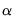
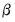

Estimation of VEC model in EViews is a special case of estimation in a var object. From the main application menu of an existing var object, click on the button to open the estimation dialog. Alternately, you may create a new VAR object by selecting Object/New Object... group, then selecting . Once the dialog appears, select in the dropdown menu to display the VEC estimation dialog:
Once you have filled the in the dialog, simply click OK to estimate the VEC. Estimation of a VEC model is carried out in two steps. In the first step, we estimate the cointegrating relations from the Johansen procedure as used in the cointegration test. We then construct the error correction terms from the estimated cointegrating relations and estimate a VAR in first differences including the error correction terms as regressors.
There are three tabs in the dialog: , , and . We discuss each of these tabs in turn.
In the Basics tab, you will provide the usual information about the , ,and lists of different types of :
To impose restrictions in estimation, click on the tab to display the restrictions dialog. You will enter your restrictions in the edit box that appears when you check the box:
“Specifying VEC Restrictions” describes the syntax for specifying these restrictions in greater detail.
To impose restrictions on the cointegrating vector  , you must refer to the (i
, you must refer to the (i,
j)-th element of the
transpose of the

matrix by
B(i,j). The
i-th cointegrating relation has the representation:
where y1,
y2, ... are the (lagged) endogenous variable. Then, if you want to impose the restriction that the coefficient on
y1 for the second cointegrating equation is 1, you would type the following in the edit box:
To impose restrictions on the adjustment coefficients, you must refer to the (i,
j)-th elements of the

matrix by
A(i,j). The error correction terms in the
i-th VEC equation will have the representation:
Restrictions on the adjustment coefficients are currently limited to linear homogeneous restrictions so that you must be able to write your restriction as , where

is a known matrix. This condition implies, for example, that the restriction,
One restriction of particular interest is whether the i-th row of the  matrix is all zero. If this is the case, then the
i-th endogenous variable is said to be
weakly exogenous with respect to the  parameters
parameters. See Johansen (1995) for the definition and implications of weak exogeneity. For example, if we assume that there is only one cointegrating relation in the VEC, to test whether the second endogenous variable is weakly exogenous with respect to  you would enter:
You may also impose restrictions on both  and
and 
. However, the restrictions on

and

must be
independent. So for example,
Estimation of the restricted cointegrating vectors  and adjustment coefficients
and adjustment coefficients  generally involves an iterative process. The
generally involves an iterative process. The tab provides iteration control for the maximum number of iterations and the convergence criterion. EViews estimates the restricted

and

using the switching algorithm as described in Boswijk (1995). Each step of the algorithm is guaranteed to increase the likelihood and the algorithm should eventually converge (though convergence may be to a local rather than a global optimum). You may need to increase the number of iterations in case you are having difficulty achieving convergence at the default settings.
Once you have filled the dialog, simply click OK to estimate the VEC. Estimation of a VEC model is carried out in two steps. In the first step, we estimate the cointegrating relations from the Johansen procedure as used in the cointegration test. We then construct the error correction terms from the estimated cointegrating relations and estimate a VAR in first differences including the error correction terms as regressors.


. You may use the dropdown menu to select the appropriate Number of cointegrating relations (see “Johansen Cointegration Test” for determination of cointegrating rank).
matrix. So for example
To impose restrictions on the adjustment coefficients, you must refer to the (i,j)-th elements of the is not fully identified, EViews applies standard normalizations to identify the remaining coefficients. Alternately, you may wish to impose your own identifying restrictions when performing estimation. Restrictions may be imposed on the cointegrating vector (elements of the
is not fully identified, EViews applies standard normalizations to identify the remaining coefficients. Alternately, you may wish to impose your own identifying restrictions when performing estimation. Restrictions may be imposed on the cointegrating vector (elements of the  matrix) and/or on the adjustment coefficients (elements of the
matrix) and/or on the adjustment coefficients (elements of the  matrix).
matrix).  matrix) and/or on the adjustment coefficients (elements of the
matrix) and/or on the adjustment coefficients (elements of the  matrix).
matrix). in a VEC with two cointegrating relations, you can type:
in a VEC with two cointegrating relations, you can type: